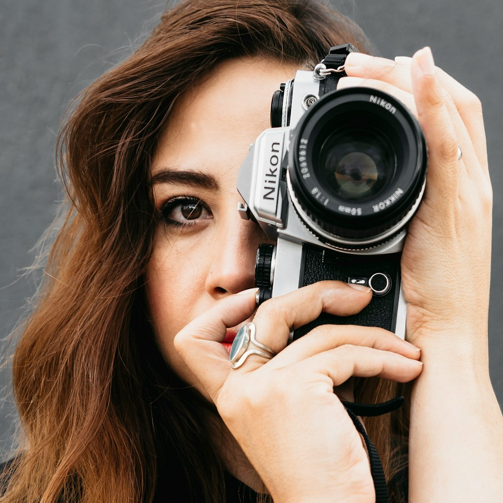
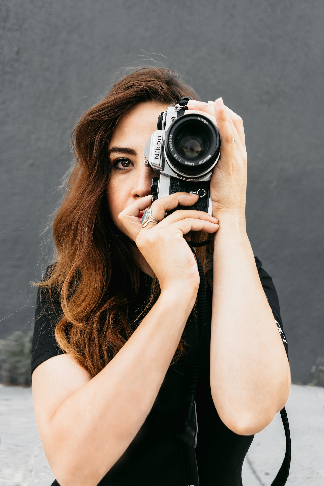

María del Carmen Gutiérrez
Alicante-born digital marketer, travel lover, and sea enthusiast. I live for sunshine, good food, and stories that connect people.

Crafting Connection Through Culture and Content
I blend creativity with strategy in everything I do. Raised in the sun-drenched village of Benimarfull, I grew up surrounded by orange groves, sea breezes, and stories shared over long lunches - a rhythm of life that still shapes my approach to work and connection.
After studying Marketing and Communication in Valencia, I launched my career helping small local brands find their voice online. My curiosity and passion for culture led me to explore other corners of Europe - from Lisbon to Florence - eventually specializing in digital branding and cross-cultural storytelling.
Now, as a fully remote professional, I work with global clients while staying rooted in my love for the Mediterranean lifestyle. Whether I'm crafting a social media campaign, building a content strategy, or enjoying a coffee on a sunny terrace, I believe in authentic connection, clear messaging, and the power of beautiful, meaningful stories.
When I'm not working, you'll likely find me:
- Planning my next seaside escape
- Experimenting with bold flavors in the kitchen
- Wandering local markets with a camera in hand
I live for sunshine, good food, and stories that connect people - and I bring that spirit into every project I touch.
Telling Stories Through Strategy and Sunlight
Whether I'm sketching a campaign over espresso, planning content for a global brand, or capturing textures in a sunlit market, my work is rooted in connection. These moments reflect more than just strategy - they show how storytelling, culture, and curiosity come together in everything I create.
Moments Into Meaning
From the rhythms of Mediterranean life to the creative energy of global collaboration, every project I take on blends heart, culture, and clear communication. This gallery offers a glimpse into my process - where authenticity meets strategy, and connection is crafted through culture and content, with stories shaped by purpose and personality.

Key Strengths That Drive Results
My approach blends creativity with strategy, ensuring every project is driven by a strong foundation of data insights and authentic storytelling. These core strengths fuel my ability to create campaigns that resonate and deliver meaningful results across diverse audiences.
From digital marketing campaigns to branding strategies, I believe that the key to success lies in clear communication and purpose-driven content. Let's work together to elevate your brand's story and drive growth through innovative marketing strategies.
A Glimpse Into My Work
Let's Collaborate!
I'm always excited to collaborate with clients who are as passionate about storytelling and cultural connection as I am. Whether you're a global brand or a local business, I believe that every brand has a unique story waiting to be told.
From digital campaigns to branding strategies, my work is all about creating meaningful connections through storytelling, culture, and strategy. Here's a look at some of the projects I've had the privilege of working on. Each one reflects the authentic connections I strive to build - where creativity meets precision, and culture shapes the narrative.
Mediterranean Essence: A Travel Brand Revitalization
I helped Mediterranean Horizons rebrand and relaunch their digital presence, shifting the focus from just travel services to an experience rooted in Mediterranean lifestyle. Through social media campaigns, content creation, and storytelling, we increased their engagement by 45% within 3 months.


Working with María del Carmen was an absolute game-changer. Her deep understanding of Mediterranean culture and her creative approach to branding brought our vision to life in ways we never imagined.
Sofia Ramirez, Marketing Director, Mediterranean Horizons
Cross-Cultural Storytelling for a Global Food Brand
Collaborating with Taste of Europe, I developed a cross-cultural campaign that highlighted Mediterranean ingredients in a way that resonated with their international audience. By blending local culture with global storytelling, we saw a 30% increase in online sales and a 50% boost in engagement across their social platforms.
María del Carmen took the time to truly understand our brand, our values, and our audience. Her work didn't just improve our digital presence, it helped us connect with our customers on a deeper level.
Luca Moretti, Head of Digital Marketing, Taste of Europe
Local Artisan Showcase: Building an E-Commerce Brand
I worked closely with Benimarfull Artisan Collective, a group of local artisans in my hometown, to create a compelling e-commerce platform that told the story behind their craft. We focused on rich visuals, storytelling, and social media marketing, resulting in a 35% increase in online sales within the first six months.
María del Carmen's passion for local culture and her ability to tell a brand's story made all the difference. Her strategies helped us grow our online presence and build meaningful relationships with customers.
Antonio Navarro, Founder, Benimarfull Artisan Collective

Fashion Forward: Social Media Strategy for a Clothing Brand
For Costa Chic Clothing, I designed and executed a complete social media strategy focused on Instagram, blending lifestyle shots with behind-the-scenes content and influencer collaborations. This campaign resulted in a 40% growth in Instagram followers and a 25% increase in sales from social media traffic.
María del Carmen's creativity and attention to detail in our social media strategy gave our brand a fresh, authentic voice. We were thrilled with the results!
Isabel Martínez, Social Media Manager, Costa Chic Clothing
Sustainable Living Campaign for a Green Brand
I collaborated with GreenRoots, a sustainable lifestyle brand, to create a campaign that showcased their eco-friendly products through a series of engaging blog posts, influencer partnerships, and digital ads. This project increased their online visibility by 50% and brought in a new wave of environmentally-conscious customers.

{kind=link}
{kind=link}
{kind=link}
{kind=link}
{kind=link}
{kind=link}
{kind=link}
{kind=link}
{kind=link}
{kind=link}
{kind=link}
{kind=link}
{kind=link}
{kind=link}
{kind=link}
{kind=link}
María del Carmen's passion for sustainability truly shone through in this campaign. Her strategic thinking and ability to create engaging content helped GreenRoots expand its customer base.
Laura García, Founder, GreenRoots

Get in touch
I'd love to hear from you! Whether you're interested in collaborating on a project, need help shaping your brand's story, or just want to say hello, feel free to reach out. I believe every connection begins with a simple conversation - so let's start one.
You can contact me by phone or email, and I'm always happy to discuss ideas, answer questions, or explore how we might work together. Rooted in the Mediterranean spirit of warmth and authenticity, I'm here to help bring your vision to life with clarity and creativity.

Looking forward to connecting soon!